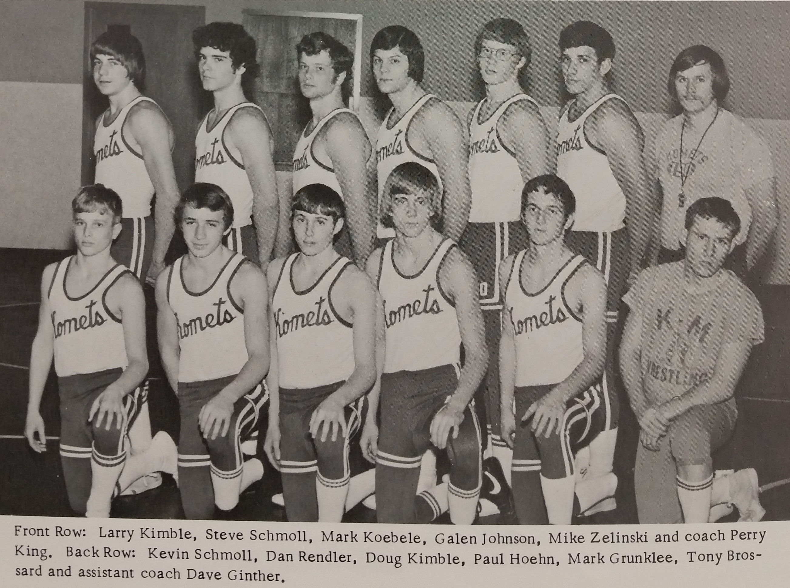

Season
1972-73
6-7Dual record
74Wrestlers
Perry KingHead coach

Roster
| Wt | Wrestler | Grade | Record | State |
|---|---|---|---|---|
| Nov. | 28th Byron | L | 24-22 | |
| Dec. | 5th West Concord | W | 54-3 | |
| Dec. | 8th Plainview | W | 33-11 | |
| Dec. | 12th Dodge Center | W | 35-18 | |
| Dec. | 15th Kenyon | L | 33-10 | |
| Jan. | 5th Cannon Falls | L | 28-18 | |
| Jan. | 9th Hayfield | L | 34-18 | |
| Jan. | 12th St. Charles | L | 39-16 | |
| Jan. | 16th Goodhue | L | 33-16 | |
| Jan. | 19th Lake City | W | 27-24 | |
| Jan. | 23rd Stewartville | W | 29-24 | |
| Jan. | 26th Zumbrota | W | 44-12 | |
| Jan. | 30th Owatonna | L | 27-18 | |
| 98# | Larry Kimble | 9th | 14-6 | |
| 105# | Steve Schmoll | 9th | 9-7 | |
| 112# | Mark Koebele | 10th | 11-9 | |
| 112# | Dick Hrabik | 12th | 4-2 | |
| 119# | Galen Johnson | 12th | 14-7 | |
| 126# | Dan Rasmussen | 11th | 3-6 | |
| 132# | Mike Zelinski | 12th | 19-5 | |
| 138# | Dan Rendler | 11th | 13-9 | |
| 138# | Paul Hoehn | 12th | 11-7 | |
| 145# | John Allen | 10th | 0-4 | |
| 145# | Dave Fredrickson | 2-2 | ||
| 155# | Mark Grunklee | 9th | 9-11 | |
| 167# | Randy Fjerstad | 11th | 2-6 | |
| 180# | Tony Brossard | 11th | 9-14 | |
| 98# | Larry Kimble | 9th | 9-2 | |
| 105# | Steve Schmoll | 9th | 4-3 | |
| 112# | Mark Koebele | 10th | 7-4 | |
| 112# | Dick Hrabik | 12th | 4-2 | |
| 119# | Galen Johnson | 12th | 9-3 | |
| 126# | Dan Rasmussen | 11th | 1-5 | |
| 132# | Mike Zelinski | 12th | 11-2 | |
| 138# | Dan Rendler | 11th | 7-5 | |
| 145# | John Allen | 10th | 0-4 | |
| 145# | Dave Fredrickson | 0-1 | ||
| 155# | Mark Grunklee | 9th | 5-5 | |
| 155# | Paul Hoehn | 12th | 5-3 | |
| 167# | Randy Fjerstad | 11th | 2-6 | |
| 180# | Tony Brossard | 11th | 4-8 | |
| 98# | Larry Kimble | 9th | 2-1 | |
| 105# | Steve Schmoll | 9th | 2-1 | |
| 112# | Mark Koebele | 10th | 2-1 | |
| 119# | Galen Johnson | 12th | 2-1 | |
| 126# | Dan Rasmussen | 11th | 2-1 | |
| 132# | Mike Zelinski | 12th | 3-0 | |
| 138# | Dan Rendler | 11th | 2-1 | |
| 145# | Dave Fredrickson | 2-2 | ||
| 155# | Paul Hoehn | 12th | 2-1 | |
| 167# | Mark Grunklee | 9th | 2-1 | |
| Hwt. | Tony Brossard | 11th | 2-2 | |
| 98# | Larry Kimble | 9th | 3-1 | |
| 105# | Steve Schmoll | 9th | 2-2 | |
| 112# | Mark Koebele | 10th | 2-2 | |
| 119# | Galen Johnson | 12th | 3-1 | |
| 126# | Craig Schmoll | 2-2 | ||
| 132# | Mike Zelinski | 12th | 3-1 | |
| 138# | Dan Rendler | 11th | 3-1 | |
| 145# | Doug Kimble | 3-1 | ||
| 155# | Paul Hoehn | 12th | 3-1 | |
| 167# | Mark Grunklee | 9th | 1-3 | |
| 180# | Tony Brossard | 11th | 2-2 | |
| 98# | Larry Kimble | 9th | 0-2 | |
| 105# | Steve Schmoll | 9th | 1-2 | |
| 112# | Mark Koebele | 10th | 0-2 | |
| 119# | Galen Johnson | 12th | 0-2 | |
| 126# | Mike Zelinski | 12th | 2-2 | |
| 132# | Craig Schmoll | 0-1 | ||
| 138# | Dan Rendler | 11th | 1-2 | |
| 145# | Doug Kimble | 0-2 | ||
| 155# | Paul Hoehn | 12th | 1-2 | |
| 167# | Mark Grunklee | 9th | 1-2 | |
| 180# | Tony Brossard | 11th | 1-2 |
Team Results
6-7 · Click to expand
- Nov. 28thByronL24-22
- Dec. 5thWest ConcordW54-3
- Dec. 8thPlainviewW33-11
- Dec. 12thDodge CenterW35-18
- Dec. 15thKenyonL33-10
- Jan. 5thCannon FallsL28-18
- Jan. 9thHayfieldL34-18
- Jan. 12thSt. CharlesL39-16
- Jan. 16thGoodhueL33-16
- Jan. 19thLake CityW27-24
- Jan. 23rdStewartvilleW29-24
- Jan. 26thZumbrotaW44-12
- Jan. 30thOwatonnaL27-18
Head coachPerry King